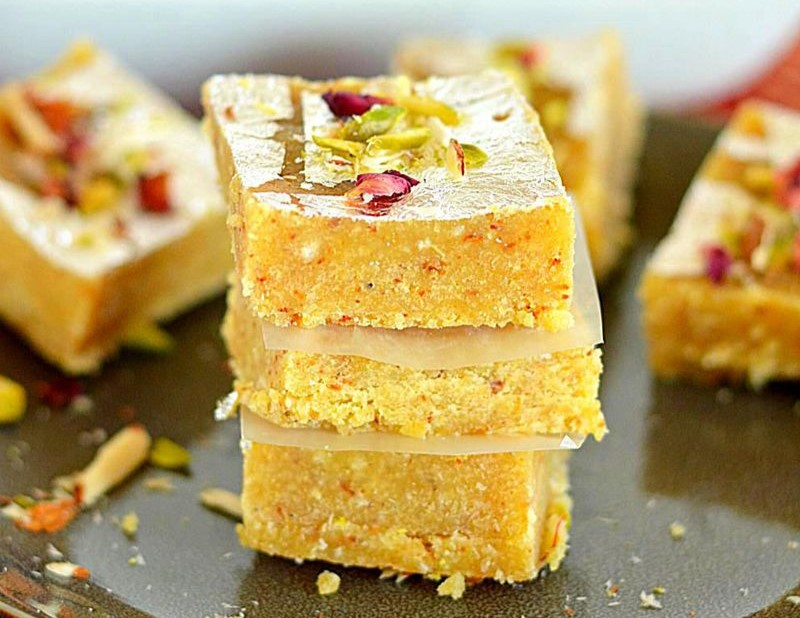

Burfi Recipe
Strawberry Custard is a beautiful looking dessert with a lovely pink shade. This dessert is sweet and has a tart bit of strawberries all over them.
Preparation time
- Prep Time: 10-15 minutes
- Cook Time: 20-30 minutes
- Total Time: 30-45 minutes
- Serving: This recipe yields around 16-20 pieces of burfi, depending on the size of each piece.
Ingredients
- 2 cups of full-fat milk powder
- 1 cup of sugar
- 1 cup of water
- 1/2 cup of ghee (clarified butter)
- A pinch of cardamom powder
- A handful of chopped nuts (optional, like almonds, pistachios, or cashews)
Instructions
- Prepare the Pan: Grease a shallow pan or plate with a little ghee and set it aside.
- Prepare the Sugar Syrup: In a heavy-bottomed pan, combine the sugar and water. Bring it to a boil over medium heat, stirring continuously until the sugar dissolves completely. Then, lower the heat and let it simmer until the syrup reaches a one-thread consistency. To check this, take a little syrup between your thumb and forefinger. If it forms a single thread when the fingers are pulled apart gently, it's ready.
- Add Milk Powder and Ghee: Once the sugar syrup is ready, add the milk powder to it gradually while stirring continuously to avoid lumps. Keep stirring until the mixture thickens and starts leaving the sides of the pan. At this stage, add the ghee and cardamom powder. Mix well.
- Cooking the Mixture: Keep stirring the mixture over low heat until it thickens further and becomes a dough-like consistency. This may take around 8-10 minutes. If you're adding nuts, you can mix them into the dough at this stage.
- Transfer to the Pan: Once the mixture is ready, quickly pour it into the greased pan or plate. Use a spatula or the back of a spoon to spread it evenly in the pan, smoothing the surface.
- Cutting into Pieces: While the mixture is still warm, use a sharp knife to cut it into desired shapes or squares. You can also decorate the burfi with additional chopped nuts if you like.
- Allow to Cool: Let the burfi cool completely in the pan before attempting to remove it. This will take a few hours.
- Serve or Store: Once cooled, carefully remove the burfi from the pan and store it in an airtight container. It can be stored at room temperature for a few days or refrigerated for longer shelf life.